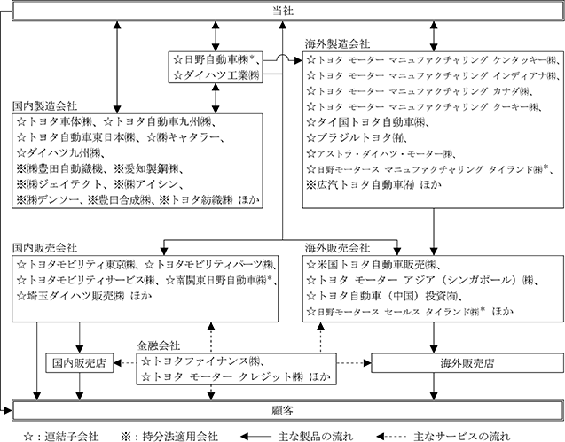

連結財務諸表提出会社（以下、当社という。）は、IFRSに準拠して連結財務諸表を作成しており、関係会社の範囲についてもIFRSの定義に基づいています。「第２ 事業の状況」および「第３ 設備の状況」においても同様です。
当社および当社の関係会社（子会社602社、関連会社および共同支配企業159社（2026年３月31日現在）により構成）においては、自動車事業を中心に、金融事業およびその他の事業を行っています。
なお、次の３つに区分された事業は「第５ 経理の状況 １ 連結財務諸表等（１）連結財務諸表 注記５」に掲げるセグメント情報の区分と同様です。
自動車 当事業においては、セダン、ミニバン、コンパクト、SUV、トラック等の自動車とその関連部品・用品の設計、製造および販売を行っています。自動車は、当社、日野自動車㈱およびダイハツ工業㈱が主に製造していますが、一部については、トヨタ車体㈱等に生産委託しており、海外においては、トヨタ モーター マニュファクチャリング ケンタッキー㈱等が製造しています。自動車部品は、当社および㈱デンソー等が製造しています。これらの製品は、国内では、トヨタモビリティ東京㈱等の全国の販売店を通じて顧客に販売するとともに、一部大口顧客に対しては当社が直接販売を行っています。一方、海外においては、米国トヨタ自動車販売㈱等の販売会社を通じて販売しています。
自動車事業における主な製品は次のとおりです。
金融 当事業においては、主として当社および当社の関係会社が製造する自動車および他の製品の販売を補完するための金融ならびに車両のリース事業を行っています。国内では、トヨタファイナンス㈱等が、海外では、トヨタ モーター クレジット㈱等が、これらの販売金融サービスを提供しています。
その他 その他の事業では、情報通信事業等を行っています。
主な事業の状況の概要図および主要な会社名は次のとおりです。

上記以外の主要な会社としては、北米の製造・販売会社の統括および渉外・広報・調査活動を行うトヨタ モーター ノース アメリカ㈱、欧州の製造・販売会社の統括および渉外・広報・調査活動を行うトヨタ モーター ヨーロッパ㈱、金融会社を統括するトヨタファイナンシャルサービス㈱、ソフトウエアを中心とした様々なモビリティの開発を担うウーブン・バイ・トヨタ㈱があります。
＊日野自動車㈱およびその連結子会社は、2026年４月１日の三菱ふそうトラック・バス㈱との経営統合に伴い、当社の連結子会社から除外されています。